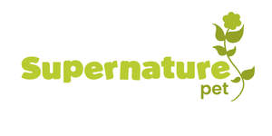

Trade Mark Journal No.2025/013 28 March 2025
UK00004169175 5 March 2025 (5,31)

- Class 5
- Dietary pet supplements in the form of pet treats; Attractants for pet animals; Vitamins for pets; Dietary supplements for pets; Vitamin and mineral supplements for pets; Dietary supplements for animals; Vitamin supplements for animals; Food supplements; Food supplements for veterinary use; Mineral dietary supplements for animals; Nutritional supplements for veterinary use; Dietary supplements for pets in the nature of a powdered drink mix; Dietary food supplements; Dietary supplements; Protein supplements for animals; Nutritional supplements; Herbal supplements; Probiotic supplements; Flaxseed dietary supplements; Feed supplements for veterinary use; Nutraceuticals for use as a dietary supplement; Mineral dietary supplements; Anti-oxidant food supplements; Vitamin supplements; Liquid dietary supplements; Vitamin and mineral food supplements; Calcium supplements; Dietary and nutritional supplements; Mineral nutritional supplements; Liquid nutritional supplements; Protein dietary supplements; Dietary supplements consisting of vitamins; Linseed dietary supplements; Protein supplements; Flaxseed oil dietary supplements; Liquid herbal supplements; Calcium tablets as a food supplement; Pollen dietary supplements; Yeast dietary supplements; Liquid vitamin supplements; Prebiotic supplements; Vitamin and mineral supplements; Dietary supplements in powder form; Protein powder dietary supplements; Food supplements in liquid form; Food supplements for non-medical purposes; Dog lotions for veterinary purposes; Fodder supplements for veterinary purposes; Linseed oil dietary supplements.
- Class 31
- Edible pet treats; Dog treats [edible]; Edible dog treats; Cat treats [edible]; Pet food for dogs; Pet foods; Pet food; Pet beverages; Pet foods in the form of chews; Edible treats for animals; Pet foodstuffs; Foodstuffs for pet animals; Dog foods; Dog food; Edible chews for dogs; Dog biscuits; Biscuits (Dog -); Food for dogs; Beverages for pets; Food for cats; Cat biscuits; Edible chews for animals; Animals (Edible chews for -); Biscuits for dogs; Foodstuff for dogs; Beverages for dogs; Edible bones and sticks for pets; Animal biscuits; Canned foods for dogs; Foods containing chicken for feeding dogs; Foods flavoured with liver for feeding dogs; Foods flavoured with chicken for feeding dogs; Beverages for cats; Foodstuffs for dogs; Foods flavoured with chicken for feeding cats; Canned foodstuffs for dogs; Biscuits for animals; Cheese flavoured foodstuffs for dogs; Foods flavoured with beef for feeding dogs; Foods containing liver for feeding dogs; Food preparations for dogs; Foods containing beef for feeding dogs; Foods flavoured with liver for feeding cats; Biscuits made from cereals for animals; Canned foodstuffs for cats; Foods in the form of rings for feeding to dogs; Bones for dogs; Sweet biscuits for consumption by animals; Foods flavoured with beef for feeding cats; Foodstuffs for cats; Foods containing chicken for feeding cats; Chews for animals (Edible -); Oat-based food for animals; Chewing bones for dogs; Foods containing liver for feeding cats; Foods in the form of rings for feeding to cats.
Natures Grub Ltd